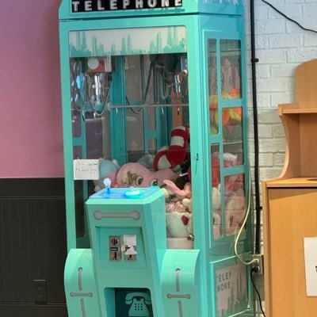

Minokakay
@Minokakay
@lotstrt 说的好像我没见到台湾人做你说的这些事，
你们台湾人做了坏事，会主动告诉日本人说自己是台湾人不是中国人吗？

多大叔
@lotstrt
@Minokakay 基數都一樣？原來我去大阪玩的時候是平行時空啊，不排隊的是中國人，插我隊的是中國人，直接卡位我詢問資訊的也是中國人，公共廁所用完不沖水還尿一地的也是，台灣人我是有遇到幾家啦，不過好像都沒有這樣子🤔連回程天下茶屋排對號火車也要不遵守排隊動線😮💨沒錯日本人是不太能分辨啦，不都是你們害的？